18 · The presentation
Presentation speech, slide by slide
The complete talk for the 16 slides in GasLeakSVM.pptx, from the greeting to the thank-you. It takes about 17 minutes (2,320 words) at a calm speaking pace. The same text is in the PowerPoint's speaker notes, so you can also read it in Presenter View.
How to use this page
- Read it aloud three times before the defence. The third time, look at the slide, not the text.
- Learn the numbers, not the sentences. If you forget a sentence, say the number on the slide and explain it in your own words.
- Point at the slide when the speech says "on the left", "the orange bars" or "the animation".
- Slow down on slides 8, 10 and 14. They hold the results the examiners care about most.
- Questions afterwards? Practise with the presentation Q&A.
Timing at a glance
| Slide | Title | Time | Starts at |
|---|---|---|---|
| 1 | Title | 0:45 | 0:00 |
| 2 | Why gas leaks need real-time detection | 1:15 | 0:45 |
| 3 | What we did, and what is new | 1:00 | 2:00 |
| 4 | The data: 7 gas sensors, 4 classes | 1:10 | 3:00 |
| 5 | Method: from raw readings to a tuned SVM | 1:00 | 4:10 |
| 6 | How an SVM separates leak from safe air | 1:30 | 5:10 |
| 7 | Tuning C and gamma with 5-fold cross-validation | 1:15 | 6:40 |
| 8 | Baseline vs improved: +17.9 points on test | 1:15 | 7:55 |
| 9 | Why the RBF kernel, and is the data enough? | 1:00 | 9:10 |
| 10 | Final model on 960 unseen test readings | 1:15 | 10:10 |
| 11 | Real time: one decision in about 1 ms | 1:00 | 11:25 |
| 12 | Real-life setting: the SVM along a gas pipeline | 1:00 | 12:25 |
| 13 | Case study: real pipeline leak sounds (GPLA-12) | 1:20 | 13:25 |
| 14 | Honest stress test: sensors drift over time | 1:15 | 14:45 |
| 15 | Conclusions and future work | 1:00 | 16:00 |
| 16 | Thank you | 0:20 | 17:00 |
Slide 1 · Title
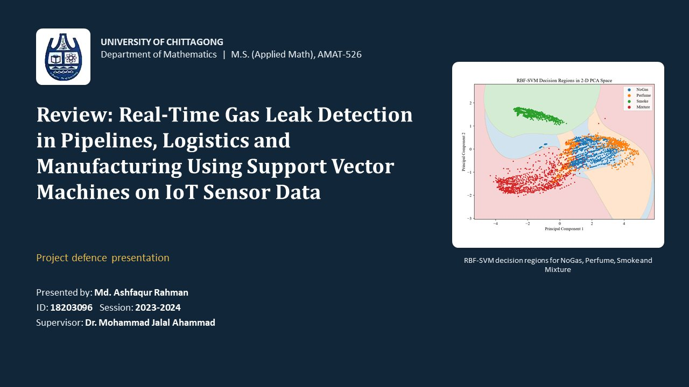
Say this
Good morning, respected teachers and examiners.
My name is Md. Ashfaqur Rahman. My ID is 18203096, and my session is 2023–2024. My supervisor is Dr. Mohammad Jalal Ahammad.
Today I will present my M.S. project: Real-Time Gas Leak Detection in Pipelines, Logistics and Manufacturing Using Support Vector Machines on IoT Sensor Data.
In one sentence: I trained a Support Vector Machine that reads seven low-cost gas sensors and decides, in about one millisecond, whether the air is safe or holds a gas, and which gas it is. The picture on the right is the final model: each coloured region is one class the SVM has learned.
Slide 2 · Why gas leaks need real-time detection
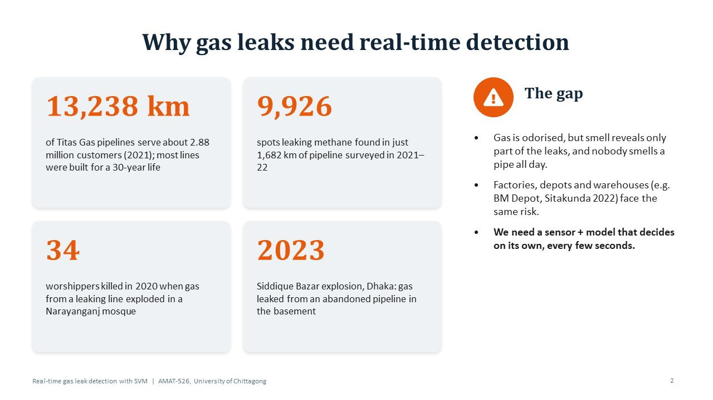
Say this
First, why does this problem matter?
Look at Bangladesh. Titas Gas runs 13,238 kilometres of pipelines for about 2.88 million customers. Most of these lines were built in the 1970s and 80s, for a life of only 30 years.
When Titas surveyed just 1,682 kilometres in 2021–22, it found methane leaking at 9,926 spots. And leaks kill. In 2020, gas from a leaking line exploded in a mosque in Narayanganj and killed 34 worshippers. In 2023, the Siddique Bazar explosion in Dhaka was traced to gas leaking from an abandoned pipeline in the basement.
On the right is the gap. Gas has an odour added, but smell finds only part of the leaks, and nobody can smell a pipe all day. Factories, depots and warehouses, like BM Depot in Sitakunda, face the same risk.
So we need a sensor and a model that decides on its own, every few seconds. That is the goal of this project.
Slide 3 · What we did, and what is new
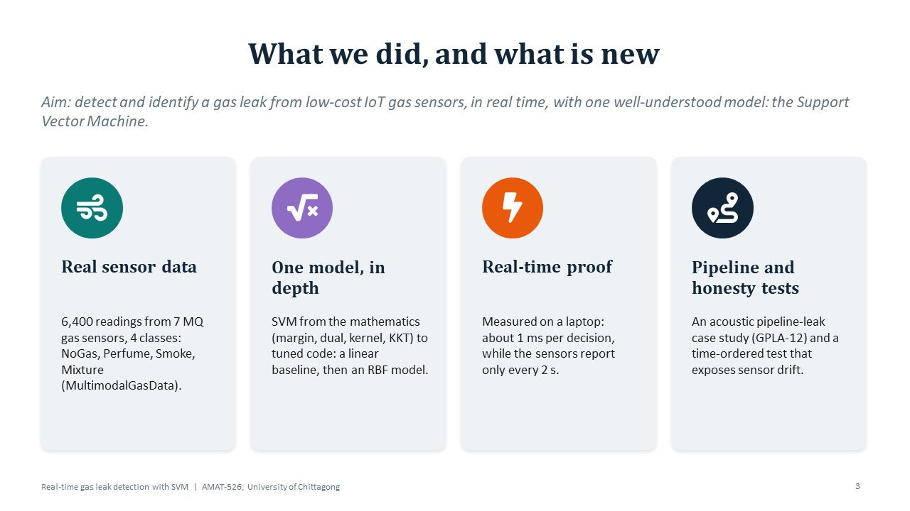
Say this
My aim was to detect and identify a gas leak from low-cost IoT gas sensors, in real time, using one well-understood model: the Support Vector Machine.
These four cards are my contribution.
One: real sensor data. 6,400 readings from seven MQ gas sensors, in four classes: no gas, perfume, smoke and a mixture.
Two: one model, studied in depth. I did not compare ten algorithms. I took the SVM from its mathematics, the margin, the dual problem, the kernel and the KKT conditions, all the way to tuned working code.
Three: real-time proof. I did not just claim it is fast. I measured it: about one millisecond per decision, while the sensors send a reading only every two seconds.
Four: pipeline and honesty tests. I applied the same method to real pipeline leak sounds, and I ran a time-ordered test that shows the main weakness of these sensors, which is drift.
Every number in this talk comes from experiments I actually ran.
Slide 4 · The data: 7 gas sensors, 4 classes
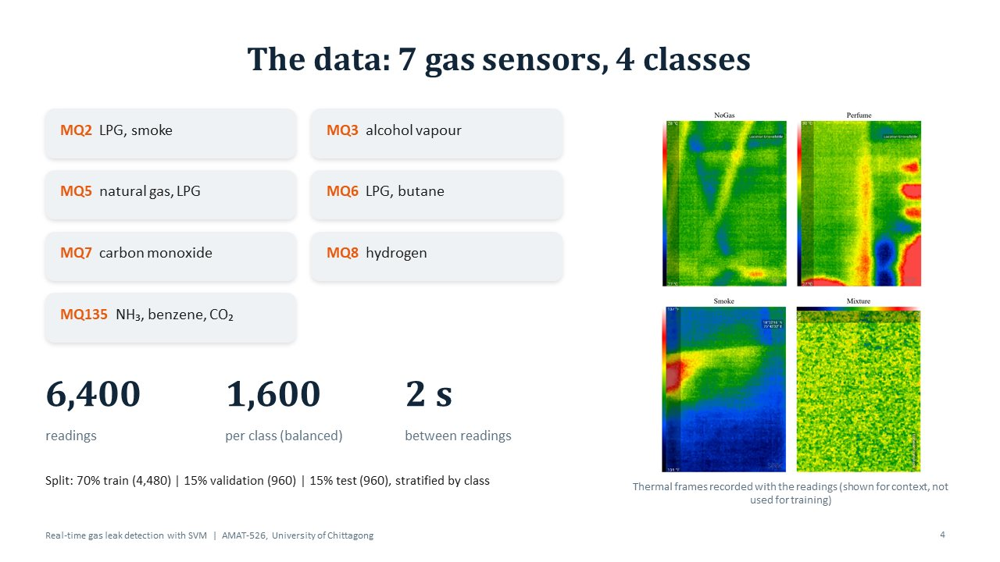
Say this
Now the data. I used the public MultimodalGasData set, recorded in a lab in India and released under a CC BY licence.
On the left are the seven sensors. Each MQ sensor reacts to several gases. For example, MQ2 reacts to LPG and smoke, MQ5 to natural gas, MQ7 to carbon monoxide. Because each sensor responds to more than one gas, no single sensor can name the gas. The model has to learn the pattern across all seven.
So each reading is simply a vector of seven numbers.
There are 6,400 readings, exactly 1,600 per class, so the classes are balanced. A new reading arrives every two seconds. The perfume class came from a deodorant spray and the smoke class from incense sticks.
I split the data into 70 percent for training, 15 percent for validation and 15 percent for the final test, keeping the class balance in each part.
On the right are thermal camera frames recorded with the readings. I show them only for context. My model uses only the sensor numbers.
Slide 5 · Method: from raw readings to a tuned SVM
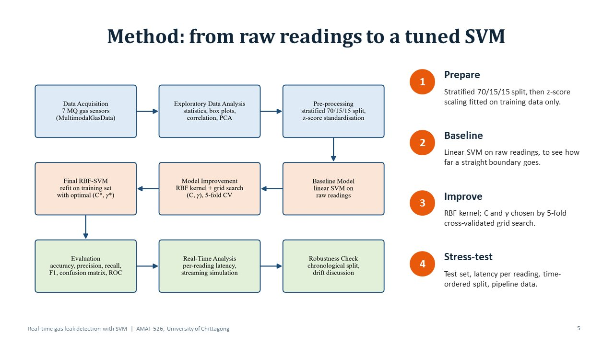
Say this
This flowchart is my whole method, and it follows the chapters of the report.
Step one, prepare. I split the data, then scale every sensor to mean zero and standard deviation one. This is the z-score. Importantly, the scaling is learned from the training data only, so no information leaks from the test set.
Step two, baseline. I first trained a simple linear SVM on the raw readings, to see how far a straight boundary can go.
Step three, improve. I switched to the RBF kernel and chose its two parameters, C and gamma, by five-fold cross-validated grid search.
Step four, stress-test. I evaluated on the test set, measured the time per reading, tested on later data in time order, and finally applied the method to pipeline data.
The test set was used only once, at the very end.
Slide 6 · How an SVM separates leak from safe air
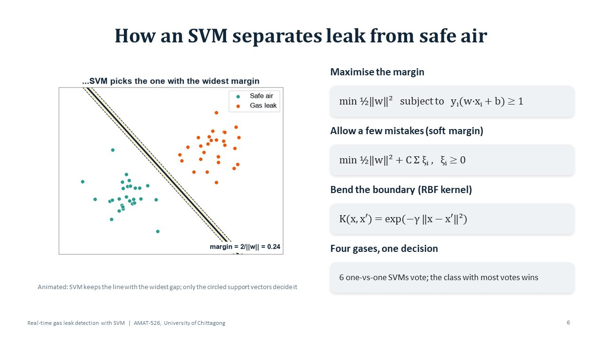
Say this
How does an SVM actually work? The animation shows the idea.
We have two groups of points: safe air and gas leak. Many lines can separate them. But some lines pass very close to a point, and a small change in a new reading would put it on the wrong side.
The SVM chooses the line with the widest margin, the widest empty band between the two classes. Only the circled points on the edge of the band decide where the line goes. These are the support vectors.
On the right is the mathematics. First, maximise the margin: the margin width is two divided by the norm of w, so we minimise half of the norm of w squared, with every point on its correct side.
Second, real data overlap, so the soft margin allows a few mistakes. The parameter C sets how strongly each mistake is punished.
Third, the RBF kernel lets the boundary bend. Gamma controls how far the influence of one training point reaches.
Finally, we have four gases, not two. So six one-versus-one SVMs are trained, one for each pair of classes, and they vote.
Slide 7 · Tuning C and gamma with 5-fold cross-validation
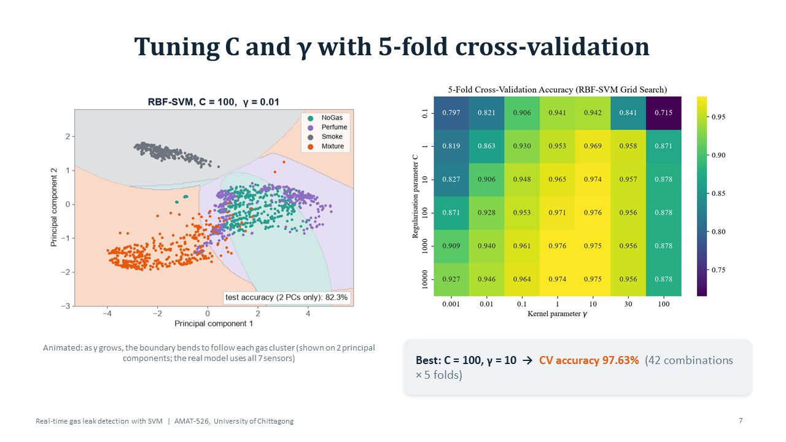
Say this
The RBF-SVM has two knobs, C and gamma, and their values matter a lot.
The animation on the left shows the effect of gamma, drawn on the first two principal components so we can see it. When gamma is small, the boundary is almost straight and the classes mix. As gamma grows, the boundary bends to follow each gas cluster. The real model uses all seven sensors, not just two components.
On the right is the grid search. I tried six values of C and seven values of gamma, 42 combinations. Each one was scored by five-fold cross-validation on the training data. Each cell shows the average accuracy.
You can see that a very small gamma underfits, and gamma equal to 100 overfits, so accuracy drops at both ends.
The best pair was C equal to 100 and gamma equal to 10, with 97.63 percent cross-validation accuracy. This best point is inside the grid, not at its edge, so the search range was wide enough.
Slide 8 · Baseline vs improved: +17.9 points on test
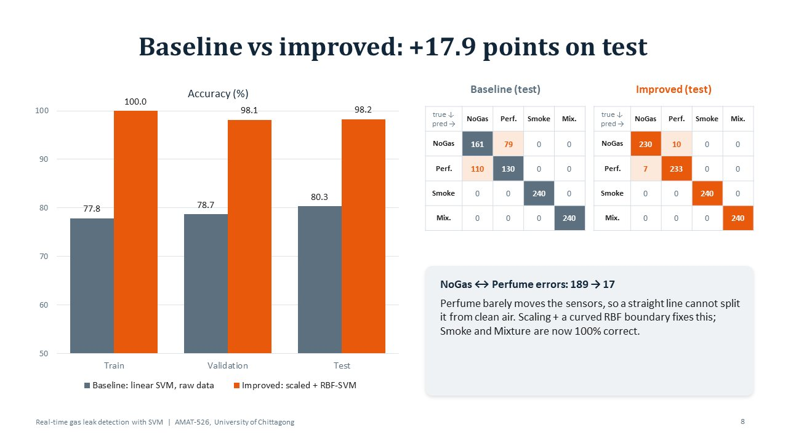
Say this
Here is the effect of the improvement.
The grey bars are the baseline: a linear SVM on raw readings. It reached 80.3 percent on the test set. The orange bars are the improved model: scaled data and the RBF kernel. It reached 98.2 percent on the test set. That is a gain of almost 18 percentage points.
Also notice that training, validation and test accuracy of the improved model are very close. So the model is not just memorising the training data.
On the right are the two confusion matrices. Rows are the true class and columns are the predicted class. In the baseline, no gas and perfume are mixed up 189 times. Perfume barely changes the sensor values, so a straight line cannot separate it from clean air.
After scaling and the curved RBF boundary, these errors fall from 189 to 17. Smoke and mixture are now 100 percent correct.
Slide 9 · Why the RBF kernel, and is the data enough?
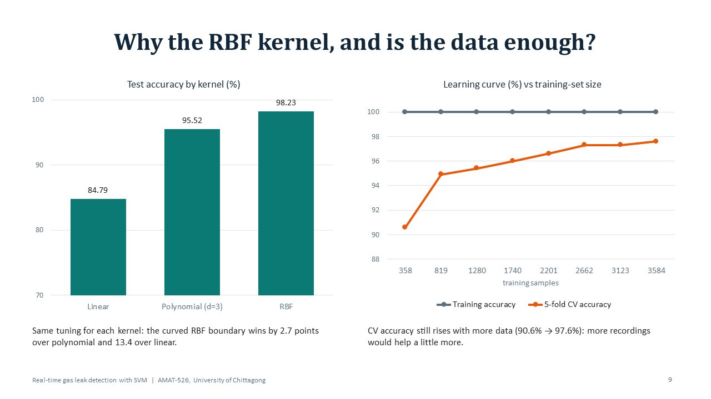
Say this
Two natural questions: why the RBF kernel, and do we have enough data?
On the left, I tuned three kernels in the same way and tested each one. Linear reached 84.8 percent, polynomial 95.5 percent, and RBF 98.2 percent. So the curved RBF boundary is the best choice for this data.
On the right is the learning curve. I trained on growing parts of the training set. The grey line is training accuracy, which stays near 100 percent. The orange line is cross-validation accuracy. It rises from 90.6 percent with 358 readings to 97.6 percent with about 3,600 readings.
The gap between the two lines is closing, and the orange line is still slowly rising. So the model is learning well, and more recordings would help a little more.
Slide 10 · Final model on 960 unseen test readings
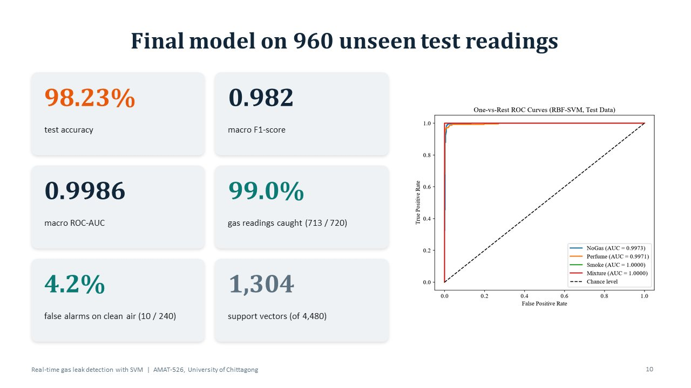
Say this
These are the final results on 960 test readings that the model had never seen.
Test accuracy is 98.23 percent. The macro F1-score, which balances precision and recall over all four classes, is 0.982. The macro ROC-AUC is 0.9986, very close to the perfect value of one.
For safety, the most important question is: does it catch the gas? If we treat any gas as an alarm, the model caught 713 of 720 gas readings, that is 99.0 percent. It raised a false alarm on clean air in 10 of 240 readings, which is 4.2 percent.
The model keeps 1,304 support vectors out of 4,480 training readings. Only these points define the boundary.
On the right are the ROC curves, one for each class. All of them hug the top-left corner. Smoke and mixture reach an area of exactly one, and no gas and perfume about 0.997.
Slide 11 · Real time: one decision in about 1 ms
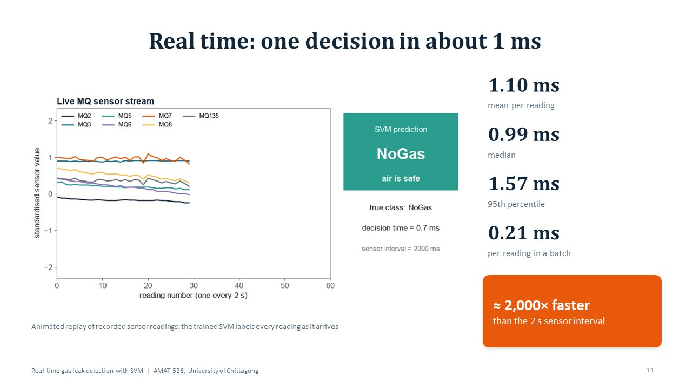
Say this
The title says real time, so I measured it.
The animation replays recorded sensor readings as a live stream. For each new reading, the trained SVM gives a label on the right. When gas appears, it switches to a leak alarm, and when the air is clean again, it says the air is safe.
I timed the model one reading at a time, exactly as a live system would use it, on an ordinary laptop. The mean time was 1.10 milliseconds, the median 0.99 milliseconds, and 95 percent of readings finished within 1.57 milliseconds. In a batch, it is only 0.21 milliseconds per reading.
The sensors send a new reading every two seconds, that is 2,000 milliseconds. So the model is about two thousand times faster than it needs to be. It can easily run on a cheap edge device or gateway.
Slide 12 · Real-life setting: the SVM along a gas pipeline
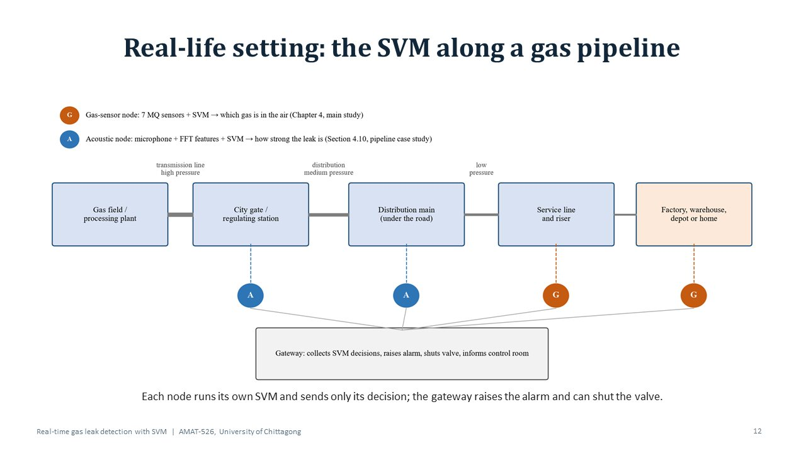
Say this
Now, where would this system live in real life? This diagram shows a gas pipeline network, like the Titas network.
Gas travels from the gas field through high-pressure transmission lines to the city gate, then through distribution mains under the roads, and finally through service lines to factories, warehouses, depots and homes.
The blue A nodes are acoustic nodes. A microphone on the pipe listens to the leak sound and an SVM estimates how strong the leak is. This is my pipeline case study.
The orange G nodes are gas-sensor nodes. They are the seven MQ sensors with the SVM from my main study. They sit where gas meets people, near risers and factory gas lines.
Each node runs its own SVM and sends only its decision to the gateway. The gateway raises the alarm, can shut the valve, and informs the control room.
Slide 13 · Case study: real pipeline leak sounds (GPLA-12)
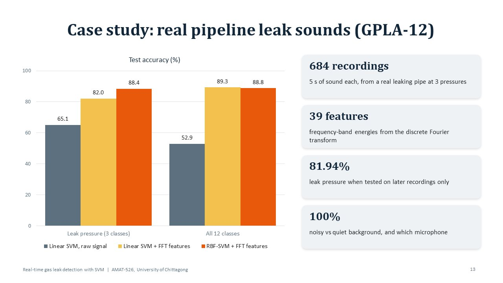
Say this
To test my method on a real pipeline, I used GPLA-12, a public dataset from Chongqing University of Science and Technology. They recorded the sound of leaks on a real gas pipeline test rig.
It has 684 recordings, each five seconds long, at three pipe pressures, with two microphones, in quiet or noisy surroundings. That gives 12 classes.
Raw sound samples are not useful directly. So I used the discrete Fourier transform to turn each recording into 39 features, mainly the energy in each frequency band.
The chart shows the effect. A linear SVM on the raw signal reached only 65 percent on pressure and 53 percent on all 12 classes. With the Fourier features, it jumps to 82 and 89 percent. The tuned RBF-SVM reached 88.4 percent on pressure and 88.8 percent on all 12 classes. So here, good features matter most.
When tested only on later recordings, pressure accuracy was 81.9 percent. And noisy versus quiet, and which microphone, were 100 percent correct.
One honest limit: this rig used compressed air, and every recording is a leak, so it measures leak strength, not leak versus no leak.
Slide 14 · Honest stress test: sensors drift over time
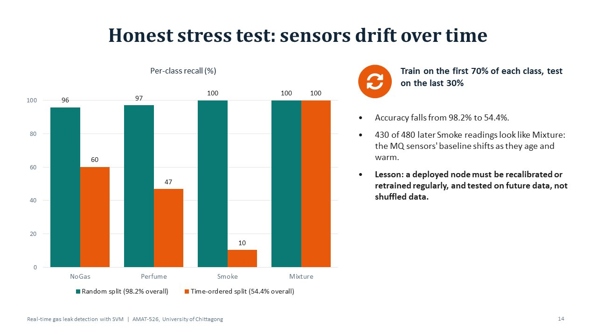
Say this
This is the most honest slide in my presentation.
A random split mixes early and late readings. So every test reading has a near twin in the training set. A real sensor, however, must work on future readings.
So I trained on the first 70 percent of each class in time order, and tested on the last 30 percent.
The green bars are the random split, where every class is above 95 percent. The orange bars are the time-ordered split. Accuracy falls from 98.2 percent to 54.4 percent. Smoke suffers most: 430 of the 480 later smoke readings look like mixture.
The reason is sensor drift. Metal-oxide MQ sensors change their baseline as they warm up and age.
The lesson is clear. A deployed node must be recalibrated or retrained regularly, and a model must be tested on future data, not only on shuffled data. I report this openly because it is the main barrier to real deployment.
Slide 15 · Conclusions and future work
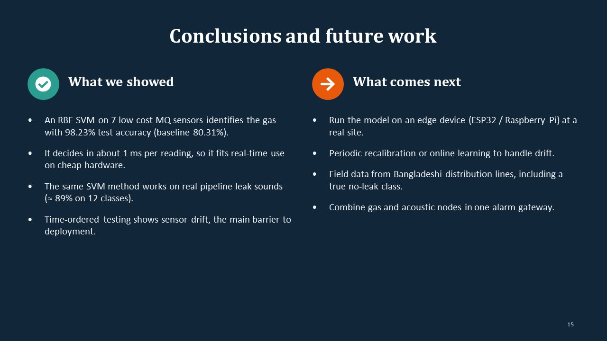
Say this
To conclude.
What I showed: an RBF-SVM on seven low-cost MQ sensors identifies the gas with 98.23 percent test accuracy, compared with 80.31 percent for the baseline. It decides in about one millisecond per reading, so it fits real-time use on cheap hardware. The same SVM method also works on real pipeline leak sounds, with about 89 percent accuracy on 12 classes. And the time-ordered test shows that sensor drift is the main barrier to deployment.
What comes next: first, run the model on an edge device such as an ESP32 or a Raspberry Pi at a real site. Second, handle drift with periodic recalibration or online learning. Third, collect field data from Bangladeshi distribution lines, including a true no-leak class. And fourth, combine gas and acoustic nodes in one alarm gateway.
Slide 16 · Thank you
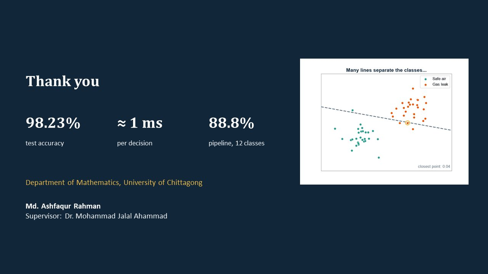
Say this
To summarise in three numbers: 98.23 percent test accuracy, about one millisecond per decision, and 88.8 percent on real pipeline leak sounds.
Thank you very much for your attention. I am happy to answer your questions.